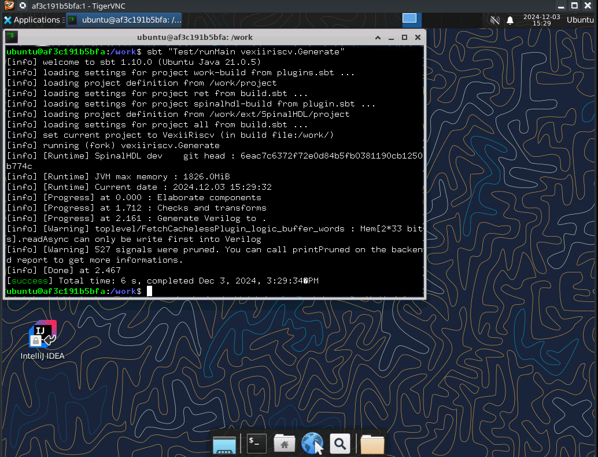

Ready made Docker environment
This self contained tutorial will show you how to pull a Docker container with all the dependencies preinstalled so that you can start right away without having to compile any of the dependencies from scratch.
Simply pull the Docker image from the Docker hub and get started.
The scope of this tutorial is:
Fetching the Docker image
Generating the verilog
Running a simulation
Opening the traces (gtkwave + konata)
Important
Starting the Docker image might take much longer, when your own user owning the folder where you cloned the repo to doesn't have the same uid as the ubuntu user inside the Docker container! The uid of the ubuntu user is 1000
Linux and MacOS X
There's a bash script called run_docker.sh which automatically pulls the most recent Docker image, starts it and then launches a VNC viewer.
Just make sure that you have Tiger VNC, bash and of course Docker installed and that the Docker demon is running.
Then you can simply run
./run_docker.sh
After the image has been fetched and the virtual X server has started you should be greeted with an XFCE4 desktop in a VNC viewer
Windows
Windows is a bit trickier, but similar as what we do on Linux and Mac
In the Power Shell, first fetch the Docker image, then start it as demon and check with the inspect command what the IP of the container is.
After that, you should be able to connect with a VNC client.
TigerVNC also exists for Windows: https://sourceforge.net/projects/tigervnc
docker.exe pull leviathanch/vexiiriscv
docker.exe run -v `pwd`:/work --privileged=true -idt leviathanch/vexiiriscv
After that, run the inspect command with the container ID docker returns when starting the image as a demonized process.
docker.ext inspect -f '{{range.NetworkSettings.Networks}}{{.IPAddress}}{{end}}' $container_id
Next run the Tiger VNC vncviewer
vncviewer.exe $ip
Generating the verilog
First open the terminal by clicking the terminal icon as shown below

As soon as you've started the Docker container as shown above you can obtain the Verilog code by simply running the following command from within the terminal.
Make sure however that you're in the proper folder
~/generate_verilog.sh
Take care that the path is correct, then press enter
{kind=link}
This script simply contains the following command:
#!/bin/bash
sbt "Test/runMain vexiiriscv.Generate"
After it has been running through, you should now have a file called "VexiiRiscv.v" right there in your source folder
{kind=link}
Running a simulation
Running a simulation also is straight forward, in the same shell as you used for generating the Verilog code.
{kind=link}
~/run_simulation.sh
This readily available script contains the simple command
#!/bin/bash
sbt "Test/runMain vexiiriscv.tester.TestBench --with-mul --with-div --load-elf ext/NaxSoftware/baremetal/dhrystone/build/rv32ima/dhrystone.elf --trace-all"
This will run through for a moment, and should look like this, finishing without errors

After the simulation has run through, you should now have a wave file in simWorkspace/VexiiRiscv/test/
Opening the traces with GTKWave
You can convert the wave file from the simulation into the VCD format and view it by opening it with GTKWve, which is already installed in the Docker image.
To do so, simply run in the shell
gtkwave simWorkspace/VexiiRiscv/test/wave.fst
This will start GTKWave.

You can now select signal lines and add them to the viewer
{kind=link}
Opening the traces with Konata
In order to visualize the instruction pipeline, you may wanna open Konata. For doing so, click on the Konata icon

Next load the konata log by going into the folder as shown in the picture
{kind=link}
You should be greeted with a colorful representation of the instructions in the RISC-V pipeline during boot up

Opening Intellij IDEA
First click onto the Intellij IDEA icon
{kind=link}
Accept the terms and conditions

We don't send data
{kind=link}
Load the VexiiRiscv project
{kind=link}
Enter the folder where your cloned repo is mounted to from outside, which is configured to be /work.
Then press OK
{kind=link}
Confirm that you trust the project

After that it will take a while until the entire project has been loaded and indexed. Make a cup of coffee or tea in the meanwhile.
Shutting down the Container
In order to shut down the container, simply logout from XFCE4 which will make the process stop and the container terminate
{kind=link}
Confirm that you wanna log out

Using the build environment
Now that your build environment is up and running and you've got Intellij running as well as are familiar with the shell, you can now take your first dive into modifying the configurations and generating and testing your own modified version of the VexiiRiscv
Here are some ideas of things to try:
How to add a custom instruction and how to test it: https://spinalhdl.github.io/VexiiRiscv-RTD/master/VexiiRiscv/Execute/custom.html
How to add that custom instruction the MicroSoc: https://spinalhdl.github.io/VexiiRiscv-RTD/master/VexiiRiscv/Soc/microsoc.html#adding-a-custom-instruction
How to export an APB3 bus from the MicroSoc toplevel: https://spinalhdl.github.io/VexiiRiscv-RTD/master/VexiiRiscv/Soc/microsoc.html#exporting-an-apb3-bus-to-the-toplevel